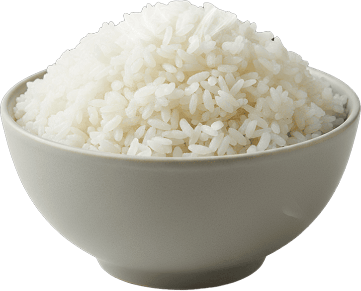
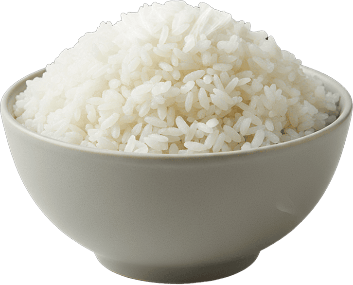
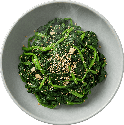
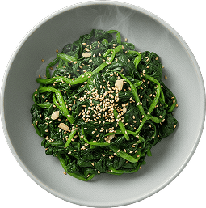
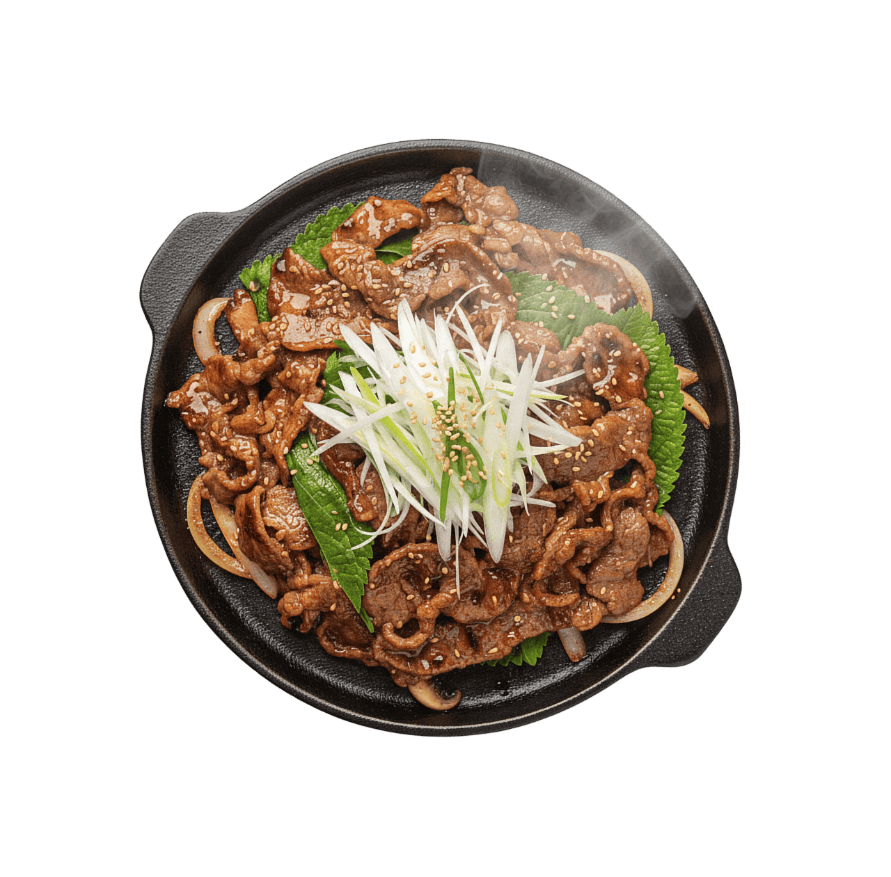
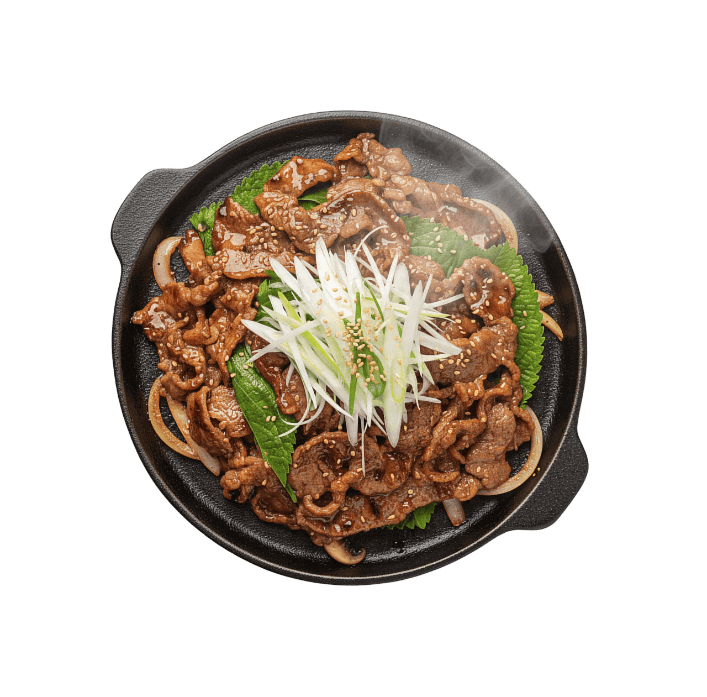

존재의 목적은
현대 사회의 자본주의 시스템은 '수단으로서의 가치'를 끊임없이 증명하라고 요구한다. 이 과정에서 현대인들은 목적 상실의 공허함을 느낀다. 현대 사회에서 개인은 고유한 '목적'을 지닌 주체로 존중받기보다, 시스템을 유지하고 성장시키는 '인적 자원'이라는 수단으로 취급된다.
현대 사회의 자본주의 시스템은 '수단으로서의 가치'를 끊임없이 증명하라고 요구한다. 이 과정에서 현대인들은 목적 상실의 공허함을 느낀다. 현대 사회에서 개인은 고유한 '목적'을 지닌 주체로 존중받기보다, 시스템을 유지하고 성장시키는 '인적 자원'이라는 수단으로 취급된다.

"무엇을 위해 사는가?"라는 원초적인 질문은 "얼마나 효율적으로 기능하는가?"라는 수단적 질문에 의해 가려진다. 인간 존재 목적을 '쓸모'로 증명해야 하는 압박 속에서, 개인은 스스로를 목적이 아닌 '수단'으로 대한다. 이것이 바로
“나도 존재의 목적이 있었으면.”


읏짱은 존재의 목적을 찾는 현대인이다. 30대 후반 회사원 모든 일정을 초 단위로 계획하고 실행하는 '시스템 인간'. 감정의 낭비나 비효율적인 행동을 극도로 경계한다. 사회가 주입한 '성공'이라는 수단을 최종 목적으로 착각하며 살아왔다. 나름 엘리트적 생활을 하고 있지만 내면은 존재의 의미에 대한 근원적인 공허함으로 가득 차 있다.
오늘도 야근 중인 읏짱… 밤을 새는 것으로 생체시간이 개조된 지도 오랜 일이다. 읏짱은 무엇을 위해 몸을 갈아가며 일을 하는 것인가. 돈? 하지만 읏짱은 월급이 만족스러운 적은 없었다. 좀 더 많은 돈을 원했고, 좀 더 나은 직급을 꿈꿨다. 그런데 이루고도 남는 것은 피로뿐이었다.
형광등은 빛을 위해, 자판기는 음료를 팔기 위해, 라디오는 방송을 틀기 위해 존재하지만, 읏짱은 인간의 존재의 목적을 찾을 수 없다고 생각했다.


읏짱은 매번 바쁘다는 이유로 끼니를 거르고 인스턴트로 때웠다. 점심은 책상 앞에서, 저녁은 편의점 김밥으로 빠르게 채웠다. 식사량이 갈수록 줄어드니 나중에는 배가 거의 고프지 않게 되었다. 밤은 매일 깊어지고, 최소한의 쪽잠만 잤다. 휴일도 업무 메일을 확인하며 보냈다. 꾸린 가족도 없는 읏짱은 일 외에는 신경 쓸 것이 없었다.
어느 날 밤, 어김 없이 밤을 새운 읏짱. 모니터 불빛에 의지한 채 마우스를 잡은 손은 바삐 움직였지만, 마음은 공허했다. 이대로 계속 일만 하면 금방 죽을 것 같은 생각이 들었다. 아니, 사실 이미 조금씩 죽어가고 있는 건 아닐까? 읏짱은 거울을 봤다. 희멀건 얼굴, 건조한 눈빛, 푹 패인 볼. 이건 정상인가? 자신이 뭔가 병든 건 아닐까?
읏짱은 자신도 모를 아픔을 참다가, 처음으로 병원을 찾아갔다. 그러나 읏짱의 늙은 의사는 젊은이의 병을 몰랐다. "특별한 질환은 없군요. 단순 피로에요. 충분히 휴식하세요.” 읏짱에게는 병이 없다고 했다. 하지만 읏짱은 명확히 아팠다. 이것이 더 답답했다. 진단할 수 없는 병, 그저 '충분한 휴식'이라는 당연한 말만 돌아왔다.


의사도 모르는 이 병. 혹은 이것이 병이 아니라, 단지 자신이 잘못 살고 있다는 신호일까? 읏짱은깨달았다. 자신은 지금 천천히 죽어가고 있다는 것을. 그리고 이 죽음에서 벗어나려면 본질적인 것을 찾아야 한다는 것을.
“나의 목적을 찾자." 읏짱은 다짐했다.
읏짱은 일을 중단하고 서울 외곽의 한 공원을 무작정 걸었다. 공원에서는 영화 상영회가 펼쳐지고 있었다. 그냥 지나가려던 읏짱은 한 배우의 목소리에 멈춰섰다.
"희망을 버려...
"그리고.."
"힘내...?"
어딘가 이상하다. “'희망을 버려, 그렇지만 힘내'가 맞는 것 아닌가?" 문법적인 지적처럼 들리지만, 그것은 단순한 문법 문제가 아니었다. 큰 울림이 읏짱을 덮쳤다. 읏짱은 최선을 다하는 삶을 산 만큼, 항상 결과에 집착했다. 좋은 결과를 기대했고, 희망을 품었다. 하지만 결과에는 많은 운이 따른다. 희망이라는 것은 지극히 희소하고, 운은 항상 내 편이 되지는 않는다.
그러니까 좋은 결과를 바란다는 것은 자기 자신을 더욱더 수단으로써 채찍질하는 것이 아닌가? 희망을 품으면 품을수록 그 희망이 좌절될 때의 절망감은 더 커진다. 그리고 그 절망감 속에서 다시 더 강한 희망을 품으려고 몸부림친다. 이 악순환이 읏짱의 모든 것을 갉아먹고 있었다.
읏짱은 그제야 깨달았다. 중요한 것은 희망이 아니라는 것을. 중요한 것은 그럼에도 불구하고 할 일을 그냥 하는 태도, 즉 희망이 없어도 힘을 내는 태도가 필요하다는 것이었다. 하지만 어떻게 힘을 낼까? 마냥 애쓰기만 하다가는 다시 허무해질 텐데.

아이들이 주민센터에서 몰려 나왔다. 읏짱은 아이들이 주민센터에서 뭘 하는 건지 궁금했다. 꼬마 한 명을 가만히 붙잡고 물었다.
“얘, 너 거기가면 뭘 배우는 거니?”

꼬마가 태연히 대답했다. “가면 그냥 먹기만해요” 주민센터에 가면 간식을 주는 모양이다. 꼬마가 덧붙었다. “저는 학교 끝나고 힘들어도 밥 먹으면 힘이 나서 또 놀 수 있어요.”

꼬마는 놀이터로 뛰어갔다. 꼬마의 순수한 말이 읏짱의 귓가에 맴돌았다. "밥을 먹으면 힘이 나요." 이렇게나 단순한 말. 겨우 10년 정도 산 아이의 말이었지만, 그 안에는 태초의 본질이 들어있었다. 밥을 먹으면 힘이 난다는 진리. 꼬마는 이미 알고 있었다. 아직 사회라는 것에 오염되지 않은 채로, 순수한 몸으로 그것을 본능적으로 깨닫고 있었다. 그리고 읏짱은 언제부턴가 그것을 망각한 채 살아왔다.
꼬마와의 만남 후, 읏짱은 자신의 삶을 돌아봤다. 병원에서 받은 조언, 그리고 아이의 말. 모든 것이 한 점으로 수렴했다.
"밥 먹으면 힘이 난다고?" 그렇다면 읏짱은 언제부터 밥을 제대로 먹지 않았을까? 언제부터 그 단순한 진리를 잊었을까? 그때 읏짱은 문득 생각했다. 예전처럼 누군가 자신을 밥 먹여주던 시절이 그리웠다. 그리고 그렇게 먹여주던 사람은... 할머니였다.
다행히도 읏짱의 할머니는 아직 살아계신다. 읏짱은 할머니를 자주 찾아 뵙지도, 연락을 드리지도 못한 것에 부끄러움이 밀려왔다.
"할머니, 저예요."

"읏짱이구나. 그래 잘 지냈니? 연락이 없더라니."
"“네..할머니, 아픈 곳은 없으세요? 조만간 들릴까 해서요.”

읏짱이 도착하자마자 할머니는 진수성찬을 차려주셨다. 생선구이, 나물무침, 된장국, 밥. 모두 할머니 손으로 만든 그리운 음식이었다. 가족과 함께하는 식사가 얼마만 이던가.

 

 

 



“읏짱아, 많이 피곤해 보이는구나. 밥도 제대로 안 먹고 다니는 것 같고…"
“네..일이 많아서요...”
"살아가는 게 뭐라고 그렇게 고생을 하니? 힘을 내려면 밥을 잘 먹고 잘 자야 한다. 이게 기본이란다.”


힘
밥
힘
밥
힘
할머니는 밥을 한 숟가락 떠서 읏짱의 입에 넣어주었다. 따뜻한 밥알이 입안에 퍼졌다. 읏짱은 마침내 이해했다. 인간은 태어나길 밥을 먹고 살길 태어났다. '잘 먹고 잘 지내는 것'이야말로 삶의 기본이자, 궁극적으로 존재를 지탱하는 목적이었다.
읏짱은 이제까지 몸을 갈아 넣어 일을 하면서도, 단지 '에너지 공급'이라는 수단으로서만 밥을 먹었다. 밥을 먹는 시간도, 그 과정도 모두 낭비로 생각했다. 빠를수록 좋다고 생각했다. 하지만 그게 틀렸다는 것을 이제야 알았다. 밥은 수단이 아니었다. 오히려 일이 밥을 위한 수단이었다. 일은 밥을 더 잘 먹기 위한 것이고, 돈은 좋은 밥을 먹기 위한 것이고, 휴식은 밥을 더 맛있게 먹기 위한 것이었다. 읏짱은 따뜻한 밥 한 숟가락을 뜨며 속삭였다.
"이게, 살아있는 거구나."
읏짱은 이제껏 죽어있던 것이나 다름없었다. 자동으로 움직이는 기계처럼. 하지만 지금 이 순간, 할머니께서 해주신 밥을 먹는 이 순간만큼은 살아있다는 실감이 들었다.
그 밤 읏짱은 할머니 집에서 오랜 시간 푹 잤다. 악몽도 없는 깊은 잠이었다. 아침에 눈을 뜨자 할머니는 또 밥을 하고 계셨다.
이제 읏짱은 알았다. 인간은 태어나길 밥을 먹고 살길 태어났다. 읏짱이 놓치고 있던 모든 것이 그 짧은 말 안에 들어있었다. 밥을 먹으면 힘이 나고, 그 힘으로 다시 일어난다. 이것이 삶이다. 이것이 모든 것의 시작이다. 그것이 우리가 이 세상에 왔을 때부터 알고 있던 모든 것이고, 죽을 때 까지 해야 할 모든 것이다. 인간의
존재의 목적은
'잘 먹고 잘 지내는 것’
바로
밥
인 것이다.